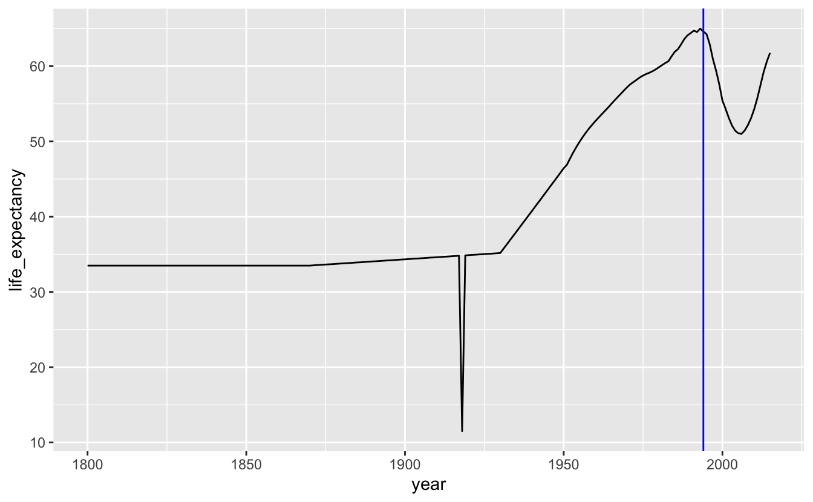

6 Time series
library(tidyverse)
library(dcldata)In the last chapter, we visualized the relationship between per capita GDP and life expectancy. You might have wondered how time fits into that association. In this chapter, we’ll explore life expectancy and GDP over time.
The following ggplot2 cheat sheet sections will be helpful for this chapter:
- Geoms
geom_path()
- Scales
The lubridate package is a helpful tool for working with dates. We’ll use some lubridate functions throughout the chapter. Take a look at the lubridate cheat sheet if you’re not already familiar with the package.
Not all time series are alike. In some situations, you’ll be interested in a long-term trend, but in others you’ll want to highlight short-term changes or even just individual values. In this chapter, we’ll cover various strategies for dealing with these different scenarios.
First, we’ll talk about the mechanics of date scales, which are useful for time series.
6.1 Mechanics
6.1.1 Date/time scales
Sometimes, your time series data will include detailed date or time information stored as a date, time, or date-time. For example, the nycflights13::flights variable time_hour is a date-time.
nycflights13::flights %>%
select(time_hour)
#> # A tibble: 336,776 × 1
#> time_hour
#> <dttm>
#> 1 2013-01-01 05:00:00
#> 2 2013-01-01 05:00:00
#> 3 2013-01-01 05:00:00
#> 4 2013-01-01 05:00:00
#> 5 2013-01-01 06:00:00
#> 6 2013-01-01 05:00:00
#> # ℹ 336,770 more rowsWhen you map time_hour to an aesthetic, ggplot2 uses scale_*_datetime(), the scale function for date-times. There is also scale_*_date() for dates and scale_*_time() for times. The date- and time-specific scale functions are useful because they create meaningful breaks and labels.
flights_0101_0102 contains data on the number of flights per hour on January 1st and January 2nd, 2013.
flights_0101_0102 <-
nycflights13::flights %>%
filter(month == 1, day <= 2) %>%
group_by(time_hour = floor_date(time_hour, "hour")) %>%
summarize(num_flights = n())
flights_0101_0102
#> # A tibble: 38 × 2
#> time_hour num_flights
#> <dttm> <int>
#> 1 2013-01-01 05:00:00 6
#> 2 2013-01-01 06:00:00 52
#> 3 2013-01-01 07:00:00 49
#> 4 2013-01-01 08:00:00 58
#> 5 2013-01-01 09:00:00 56
#> 6 2013-01-01 10:00:00 39
#> # ℹ 32 more rowsflights_0101_0102 %>%
ggplot(aes(time_hour, num_flights)) +
geom_col()Just like with the other scale functions, you can change the breaks using the breaks argument. scale_*_date() and scale_*_datetime() also include a date_breaks argument that allows you to supply the breaks in date-time units, like “1 month”, “6 years”, or “2 hours.”
flights_0101_0102 %>%
ggplot(aes(time_hour, num_flights)) +
geom_col() +
scale_x_datetime(date_breaks = "6 hours") +
theme(axis.text.x = element_text(angle = -45, hjust = 0))Similarly, you can change the labels using the labels argument, but scale_*_date() and scale_*_datetime() also include a date_labels function made for working with dates. date_labels takes the same formatting strings as functions like ymd() and as_datetime(). You can see a list of all formatting strings at ?strptime.
We’ll use date_labels to format time_hour so that it doesn’t take up as much space.
flights_0101_0102 %>%
ggplot(aes(time_hour, num_flights)) +
geom_col() +
scale_x_datetime(date_breaks = "6 hours", date_labels = "%a %I %p") 
6.2 Trends
6.2.1 One response variable
gm_combined is the same Gapminder data you saw in the previous chapter. Previously, we investigated how life expectancy is associated with per capita GDP. Now, we’ll ask a more obvious question: how has life expectancy changed over time?
gm_combined
#> # A tibble: 2,562 × 7
#> iso_a3 name region year population gdp_per_capita life_expectancy
#> <chr> <chr> <chr> <dbl> <dbl> <dbl> <dbl>
#> 1 afg Afghanistan Asia 1950 7752118 1040 32.0
#> 2 afg Afghanistan Asia 1955 8270581 1131 35.1
#> 3 afg Afghanistan Asia 1960 8996351 1213 38.6
#> 4 afg Afghanistan Asia 1965 9938414 1190 42.2
#> 5 afg Afghanistan Asia 1970 11126123 1183 45.8
#> 6 afg Afghanistan Asia 1975 12590286 1211 46.3
#> # ℹ 2,556 more rowsFirst, let’s just look at a single country: South Africa.
south_africa <-
gm_combined %>%
filter(name == "South Africa")
south_africa %>%
ggplot(aes(year, life_expectancy)) +
geom_point() Adding geom_line() will make it easier to connect the dots and see the trend.
south_africa %>%
ggplot(aes(year, life_expectancy)) +
geom_line() +
geom_point()It looks like life expectancy started to fall around the time apartheid ended. We can add a reference line to check our hypothesis.
south_africa %>%
ggplot(aes(year, life_expectancy)) +
geom_line() +
geom_point() +
geom_vline(xintercept = 1994, color = "blue")We could remove the points and just use a line, but the points are helpful indicators of the actual data. Generally, the more points you have, the less important it is to keep the points. For example, the following plot shows life expectancy for South Africa using the gm_life_expectancy, which contains yearly data. We’ve also filtered the data to only include the years 1800 to 2015, because the data after 2015 is based on projections.
south_africa_le <-
gm_life_expectancy %>%
filter(name == "South Africa", year <= 2015)
south_africa_le %>%
ggplot(aes(year, life_expectancy)) +
geom_line() +
geom_point() +
geom_vline(xintercept = 1994, color = "blue")The points are so close together that they form their own line, and so removing geom_point() doesn’t really affect the appearance of the plot.
south_africa_le %>%
ggplot(aes(year, life_expectancy)) +
geom_line() +
geom_vline(xintercept = 1994, color = "blue")
Including points is important, however, if your data is irregularly distributed. For example, say our data only included two points between 1800 and 1950, but was yearly after 1950. In this situation, it would be important to use both points and lines to show the discrepancy in the amount of data.
There are two major dips in life expectancy in our plot. The first is the result of the 1918 influenza pandemic. The second, as we already pointed out, started around the end of apartheid. One hypothesis for this dip is that data reporting procedures changed when the South African government changed. Maybe the apartheid government systematically under-sampled non-white groups who may have had lower life expectancies. Another hypothesis is that changes in government led to general upheaval, which somehow affected life expectancy.
To further investigate, we’ll compare South Africa to its neighbors during this time period.
southern_africa_countries <-
gm_life_expectancy %>%
filter(
name %in% c("South Africa", "Swaziland" ,"Lesotho", "Botswana")
) %>%
filter(year >= 1980, year <= 2015)
southern_africa_countries %>%
mutate(name = fct_reorder2(name, year, life_expectancy)) %>%
ggplot(aes(year, life_expectancy, color = name)) +
geom_vline(xintercept = 1994, color = "blue") +
geom_point() +
theme(legend.justification = "top") When you have multiple time series, adding geom_line() makes it easier to group each series together.
southern_africa_countries %>%
mutate(name = fct_reorder2(name, year, life_expectancy)) %>%
ggplot(aes(year, life_expectancy, color = name)) +
geom_vline(xintercept = 1994, color = "blue") +
geom_line() +
geom_point() +
theme(legend.justification = "top")In the previous chapter, you learned how to reorder and align legends to make it easier to match lines with labels. Directly labeling the lines makes it even easier to connect a line with its label.
southern_africa_countries %>%
ggplot(aes(year, life_expectancy, color = name)) +
geom_vline(xintercept = 1994, color = "blue") +
geom_line() +
geom_point() +
geom_text(
aes(label = name),
data = southern_africa_countries %>% filter(year == 2015),
color = "black",
hjust = 0,
size = 3,
nudge_x = 0.5
) +
guides(color = "none") +
coord_cartesian(xlim = c(1980, 2020)) We removed the legend by using guides(color = "none").
Interestingly, all four countries experienced similar declines in the early 1990s. This suggests that South Africa’s decline was not related to the end of apartheid. Next, we might ask if this dip occurred in all of Africa, which brings us to the next section: visualizing distributions over time.
6.2.2 Distributions over time
We can join gm_life_expectancy with gm_countries to look at all countries in Africa.
africa_le <-
gm_life_expectancy %>%
left_join(gm_countries, by = c("iso_a3", "name")) %>%
filter(
region_gm4 == "africa",
year >= 1980,
year <= 2015
)
africa_le %>%
pull(name) %>%
n_distinct()
#> [1] 54There are 54 countries listed under the “Africa” region in the data.
Plotting all the data at once is messy, but you can see that many countries experienced the same dip in the 1990s. You can also see that the countries with high life expectancies didn’t experience at dip at all, and that many countries experienced dramatic downward spikes due to single events.
africa_le %>%
ggplot(aes(year, life_expectancy, group = name)) +
geom_line(alpha = 0.4)One of these downward spikes is the Rwandan genocide.
africa_le %>%
ggplot(aes(year, life_expectancy, group = name)) +
geom_line(alpha = 0.4) +
geom_line(data = africa_le %>% filter(name == "Rwanda"), color = "red") +
geom_point(data = africa_le %>% filter(name == "Rwanda", year == 1994)) +
geom_text(
aes(label = year),
data = africa_le %>% filter(name == "Rwanda", year == 1994),
hjust = 0,
nudge_x = 0.5
) Another is the Libyan Civil War.
africa_le %>%
ggplot(aes(year, life_expectancy, group = name)) +
geom_line(alpha = 0.4) +
geom_line(data = africa_le %>% filter(name == "Libya"), color = "red") +
geom_point(data = africa_le %>% filter(name == "Libya", year == 2011)) +
geom_label(
aes(label = year),
data = africa_le %>% filter(name == "Libya", year == 2011),
hjust = 0,
nudge_x = 0.5
) Highlighting specific lines of interest is a useful way to compare select values to the rest of the data. We could try highlighting the subset of countries in southern Africa that we looked at earlier.
africa_le %>%
ggplot(aes(year, life_expectancy, group = name)) +
geom_line(alpha = 0.4) +
geom_line(data = southern_africa_countries, color = "red") You can see that the countries we highlighted weren’t the only ones that experienced the dip in the 1990s.
To get a sense of the trend for all of Africa, we could add a smooth line.
africa_le %>%
ggplot(aes(year, life_expectancy)) +
geom_line(aes(group = name), alpha = 0.4) +
geom_smooth(method = "loess", color = "red") You can see a slight dip around the 1990s. However, this smooth line doesn’t capture the amount of variation in trends. Africa is a massive continent. Maybe dividing it up further will be more informative.
We can use region_gm8 to compare North Africa to Sub-Saharan Africa.
africa_le %>%
ggplot(aes(year, life_expectancy, color = region_gm8, group = name)) +
geom_line()Most of the data lies between 40 and 80 years. We’ll use coord_cartesian() to zoom in on this region.
africa_le %>%
ggplot(aes(year, life_expectancy, color = region_gm8, group = name)) +
geom_line() +
coord_cartesian(ylim = c(40, 80))Individual lines are now easier to see. There aren’t very many countries in North Africa, but they all have relatively high life expectancies. All of the countries that experienced a severe dip in life expectancy in the 1990s are in Sub-Saharan Africa.
Now, we can try a smooth line for each region.
africa_le %>%
ggplot(aes(year, life_expectancy, color = region_gm8)) +
geom_smooth(method = "loess") +
coord_cartesian(ylim = c(40, 80))There’s a sharp contrast between North Africa and Sub-Saharan Africa. The dip in Sub-Saharan African life expectancies is likely due the HIV/AIDS pandemic, which affected most of Sub-Saharan Africa severely, but was particularly bad in the southern countries that we looked at earlier.
In other situations, you may want to use the techniques covered in the Distributions chapter. For example, you might be curious how the distribution of life expectancies for African countries has changed over time. Box plots are a good option.
gm_life_expectancy %>%
left_join(gm_countries, by = c("iso_a3", "name")) %>%
filter(region_gm4 == "africa", year <= 2015) %>%
mutate(median_le = median(life_expectancy, na.rm = TRUE)) %>%
ggplot(aes(year, life_expectancy, group = cut_width(year, 10))) +
geom_hline(aes(yintercept = median_le), color = "red") +
geom_boxplot() +
scale_x_continuous(breaks = seq(1800, 2000, 25))6.2.3 Two response variables
So far, we’ve encoded time as position along the x-axis and a response variable, life_expectancy, along the y-axis. What if we want to encode a second response variable? It would be interesting to see how both life expectancy and per capita GDP have changed over time.
geom_path() is a useful way to represent a time series with two response variables. Unlike geom_line(), which connects points in the order they appear along the x-axis, geom_path() connects points in the order they appear in the data. We can use this feature of geom_path() to represent a time series without actually plotting time along an axis.
Here, we’ve plotted gdp_per_capita and life_expectancy for South Africa using geom_path(). We arranged the data by year so that the earliest years are plotted first.
south_africa %>%
arrange(year) %>%
ggplot(aes(gdp_per_capita, life_expectancy)) +
geom_path() +
stamp("Bad")To read a geom_path() plot, you follow the line’s path through the plot space, but you can’t currently tell which end of the line is the starting point. We’ll add a dot to the end of the line indicating the endpoint.
south_africa %>%
arrange(year) %>%
ggplot(aes(gdp_per_capita, life_expectancy)) +
geom_path() +
geom_point(data = south_africa %>% slice_max(year))
Sometimes, you’ll want to plot individual points as well as the path line. We’ll make the last point bigger to indicate that it’s the endpoint.
south_africa %>%
arrange(year) %>%
ggplot(aes(gdp_per_capita, life_expectancy)) +
geom_path() +
geom_point() +
geom_point(data = south_africa %>% slice_max(year), size = 2.5)Now, it’s clear that the line starts in the lower left corner. Both life expectancy and per capita GDP increased until around $11000. Then, life expectancy continued to grow, but per capita GDP shrank. Around $9025, this trend reversed. Life expectancy fell when per capita GDP increased. Finally, both started increasing again.
You still can’t match points on the path to specific years. Labeling inflection points is helpful.
south_africa %>%
arrange(year) %>%
ggplot(aes(gdp_per_capita, life_expectancy)) +
geom_path() +
geom_point() +
geom_point(data = south_africa %>% slice_max(year), size = 2.5) +
geom_text(
aes(label = year),
data = south_africa %>% filter(year %in% c(1950, 1980, 1995, 2005, 2015)),
nudge_x = -250
)
In 1980, per capita GDP started going down, but life expectancy kept increasing. As a response to apartheid, the United States and other countries imposed sanctions against South Africa in the 1980s. The campaign to divest from South Africa also gathered speed in the 1980s. Both the sanctions and the divestment campaign likely caused the per capita capita GDP to drop. Notice that the trend reversed in 1995.
We can also use alpha to encode year.
south_africa %>%
arrange(year) %>%
ggplot(aes(gdp_per_capita, life_expectancy, alpha = year)) +
geom_path() +
geom_point()
Directly labeling points instead of using a legend makes the plot easier to decode. At a minimum, you should label the starting and ending points.
south_africa %>%
arrange(year) %>%
ggplot(aes(gdp_per_capita, life_expectancy)) +
geom_path(aes(alpha = year)) +
geom_point(aes(alpha = year)) +
geom_text(
aes(label = year),
data = south_africa %>% arrange(year) %>% slice(c(1, n())),
nudge_x = -250
) +
guides(alpha = "none")Again, labeling inflection points is helpful.
south_africa %>%
arrange(year) %>%
ggplot(aes(gdp_per_capita, life_expectancy)) +
geom_path(aes(alpha = year)) +
geom_point(aes(alpha = year)) +
geom_text(
aes(label = year),
data = south_africa %>% filter(year %in% c(1950, 1980, 1995, 2005, 2015)),
nudge_x = -250
) +
guides(alpha = "none")6.3 Short-term fluctuations
In the mechanics section of this chapter, you saw the following plot.
flights_0101_0102 %>%
ggplot(aes(time_hour, num_flights)) +
geom_col() +
scale_x_datetime(date_breaks = "6 hours", date_labels = "%a %I %p") You might wonder why we used geom_col() to represent a time series. Here’s the same plot using geom_line() and geom_point().
flights_0101_0102 %>%
ggplot(aes(time_hour, num_flights)) +
geom_line() +
geom_point() +
scale_x_datetime(date_breaks = "6 hours", date_labels = "%a %I %p")From both plots, you can see that most flights occur in the early morning and around 4pm, but notice that we’re actually treating time like a discrete variable in this situation. We’ve counted the number of flights for each hour, and so it’s useful to be able to connect a number of flights with a specific hour. Columns make it easier to connect numbers of flights to specific hours.
Vertical segment plots using geom_segment() can also be helpful for some time series data. Say we want to understand what the first week in January looked like.
flights_week_1 <-
nycflights13::flights %>%
filter(week(time_hour) == 1) %>%
group_by(time_hour = floor_date(time_hour, "hour")) %>%
summarize(num_flights = n())geom_point() and geom_line() produce the following plot.
flights_week_1 %>%
ggplot(aes(time_hour, y = num_flights)) +
geom_line() +
geom_point() +
scale_x_datetime(date_breaks = "1 day", date_labels = "%a") You can see that each day is shaped similarly. However, you can’t tell that there are actually no flights for a couple hours each night.
flights_week_1 %>%
ggplot() +
geom_segment(
aes(x = time_hour, xend = time_hour, y = 0, yend = num_flights)
) +
scale_x_datetime(date_breaks = "1 day", date_labels = "%a") geom_segment() does a better job of showing the gaps between days. Segments also make it easier to perceive each day as a group to compare against the others. Another advantage of geom_segment() is that we can use color to encode a categorical variable.
flights_week_1 %>%
mutate(am_pm = if_else(am(time_hour), "AM", "PM")) %>%
ggplot() +
geom_segment(
aes(
x = time_hour,
xend = time_hour,
y = 0,
yend = num_flights,
color = am_pm
)
) +
scale_x_datetime(date_breaks = "1 day", date_labels = "%a") In this case, there’s no long-term trend we’re interested in. Instead, we want to understand short-term fluctuations, and we care about individual values. In these situations, geom_col() and geom_segment() are good options.
6.4 Individual values
Sometimes, you’ll want to display time on the x-axis like a time series, but you won’t actually care about displaying any kind of trend.
The famines dataset from dcldata tracks major famines across time.
famines
#> # A tibble: 77 × 6
#> location iso_a3 region year_start year_end deaths_estimate
#> <chr> <chr> <chr> <dbl> <dbl> <dbl>
#> 1 Ireland irl Europe 1846 1852 1000000
#> 2 India ind Asia 1860 1861 2000000
#> 3 Cape Verde cpv Africa 1863 1867 30000
#> 4 India ind Asia 1866 1867 961043
#> 5 Finland fin Europe 1868 1868 100000
#> 6 India ind Asia 1868 1870 1500000
#> # ℹ 71 more rowsThere’s no obvious relationship between time and deaths due to famines.
famines %>%
ggplot(aes(year_start, deaths_estimate)) +
geom_point() +
scale_y_log10()Even though there’s no trend, this data is still interesting if you’re curious about individual famines.
The above plot only uses the start date, but we also have the length of the famines. We can treat the x-axis as representing year generally and encode the length of a line as the length of the famine.
famines %>%
arrange(desc(deaths_estimate)) %>%
ggplot(aes(year_start, deaths_estimate)) +
geom_segment(
aes(xend = year_end, yend = deaths_estimate, color = region),
size = 2,
lineend = "round"
) +
ggrepel::geom_text_repel(
aes(x = 0.5 * (year_start + year_end), label = location),
size = 2.3,
seed = 212
) +
scale_y_log10() +
labs(x = "year")
#> Warning: Using `size` aesthetic for lines was deprecated in ggplot2 3.4.0.
#> ℹ Please use `linewidth` instead.
#> This warning is displayed once every 8 hours.
#> Call `lifecycle::last_lifecycle_warnings()` to see where this warning was
#> generated.